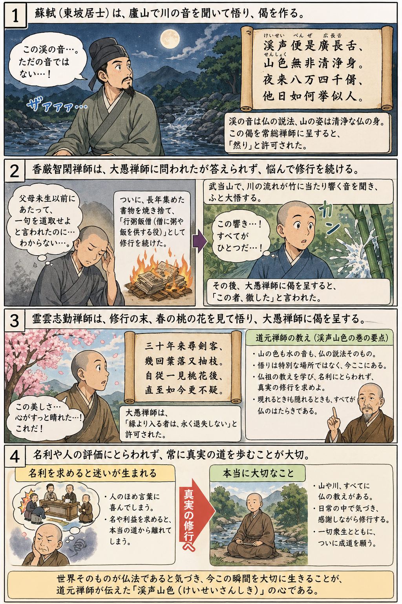
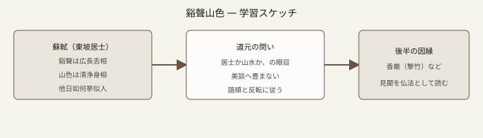

七十五巻 巻一覧
正法眼藏第二十五 谿聲山色
原文・現代語訳の全文は 全文ページを参照してください。
なぜ優先するか
山水・谿流・声色を通じて無情説法や見聞の門を論じる中核篇の一つです。東坡の偈「谿聲便是廣長舌、山色無非清浄身」から入り、誰が悟ったのか（居士か山水か）という問いを鋭く立て、香厳の撃竹など後半の因縁へ広げます。環境倫理や芸術論との対話にもつながりやすいが、まずは道元の語順と反語に忠実に読むことが先です。
語彙の足場
- 廣長舌相：仏の説法を喩える相。谿声＝その声的現れ、という読み立て。
- 清淨身：仏身の一面。山色＝その身の現れ、という並行。
- 無情説法：草木国土が法を説く、という大系の問題意識（第四十六巻とも響き合う）。
- 逆水：谿流の勢いの喩。単なるロマン表現ではなく、聞き・見の現前を論じます。
原文（要点の抜粋）
抜粋は doc/正法眼蔵.txt に準拠します。原文の参照元:
https://shomonji.or.jp/zazen/doc/genzou.html
大宋國に、東坡居士蘇軾とてありしは、字は子瞻といふ。筆海の眞龍なりぬべし、佛海の龍象を學す。重淵にも游泳す。曾雲にも昇降す。あるとき、廬山にいたりしちなみに、溪水の夜流する聲をきくに悟道す。偈をつくりて、常總禪師に呈するにいはく、
谿聲便是廣長舌、
山色無非淸淨身。
夜來八萬四千偈、
他日如何擧似人。
図解（イラスト）

図解（スケッチ SVG）

深掘り（教育的メモ）
東坡のエピソードは「文人悟入」の美話としても読めますが、道元はそこで止まりません。照覚・無情説法・谿声の驚きへ折り重ね、「居士の悟道するか、山水の悟道するか」という、二項対立を超えた眼目を突きつけます。ここを感動話に還元しないことが、道元読解のコツです。